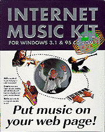

| (out of 5) |
Price: $49.00 online (List $79)
Platforms: Windows 95, Windows 3.1

I'll get right to the point about the Internet Music Kit...it's deceptive.
By now you have probably been to a site which plays tinny music at you. The music is in the form of a MIDI (Musical Instrument Digital Interface), which allows a large amount of musical information to be compressed into a small file size. The drawback is that the music itself has a decidedly cheesy, tinny quality.
You probably hear a MIDI playing now, and see the controller for it at the top of the page. The midi was created using Roland's DoReMix (I tried to create the least silly-sounding MIDI I could), which is included in the IMK. Sadly, the inclusion of DoReMix is the only thing the kit has going for it.
The MIDI itself is playing through the LiveAudio player (a standard plug-in for Internet Explorer and Netscape Navigator 3.0 and higher), and was imbedded on the page by me, not the IMK software. What the music kit does is to convert the MIDI to a new format which is only recognized by the IMK. A line of code is then added to the html file of your choice, embedding the music file on that page.
I call the kit deceptive for two reasons. First, the box claims that you can "Add a soundtrack to your web page..." but never mentions that the soundtrack has to be a MIDI. Anyone hoping to add a piece of recorded music to their own site will be out of luck...and out $50 or more. The second and more outrageous deception is that you may never know that anyone visiting your page from another computer will not hear the music playing. Visitors will first have to recognize that there is something on your page which they are unable to view. When they investigate, a message will explain that they need to get a plugin at Wildcat Canyon's Web site. If they choose to download the plugin, they will have to install it, then return to your site to hear the music. They will then learn that the plugin has taken over as their device for playing MIDI files as well. Now the sleek and useful interface standard to both Netscape and Internet Explorer has been replaced with a distracting box that requires you to configure your sound device before you can hear anything. The volume slide control is replaced by a pull-down menu with three volume settings and a direct link back to Wildcat Canyon's site, just in case users are interested in buying the IMK themselves.
I only found out that a plugin was required to hear the music because I have other computers available in the office on which to test the performance of the software. Now my computer will only play MIDIs through the IMK software, which I find incredibly annoying.
If you'd like to see for yourself what a page featuring the Internet Music Kit's is like, try this page I created for the purpose. Be warned though, do not download and install the software unless you don't mind having it take over your browser.
Oh, and if you'd like to save the money on the kit and you have a MIDI you want on your page (or you can find a MIDI authoring freeware program online), here's the HTML to embed it, absolutely free of charge: